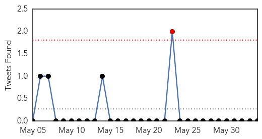
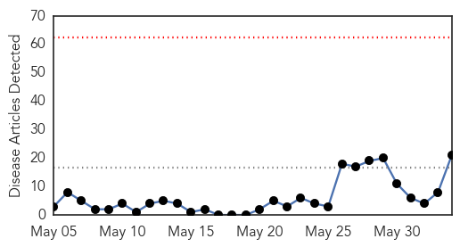
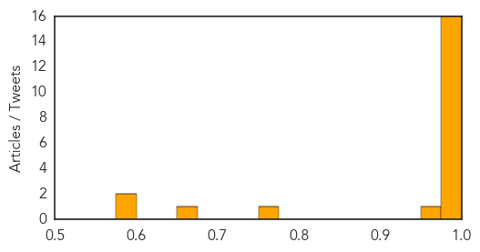

MERS
30-Day Web Trend
1 alerts, 0 warnings

30-Day Twitter Trend
1 alerts, 0 warnings

Article Locations

Article Confidences

Top Articles:
- 1.000
- Mers virus: Saudi Arabia raises death toll to 282
- 1.000
- Saudi review finds over 100 more MERS infections
- 1.000
- Saudi review finds 113 more MERS cases - Deputy health minister fired - Kuwait Times
- 0.999
- UAE develops national Mers coronavirus plan
- 0.999
- UAE develops national Mers coronavirus plan
- 0.999
- Saudi Arabia reports big jump in MERS cases, including 282 deaths
- 0.998
- Saudi MERS data review shows big jump in number of deaths
- 0.998
- Saudi MERS data review shows big jump in number of deaths
- 0.998
- DH closely monitors two additional overseas MERS cases reported to WHO
- 0.996
- Mers kills 10 and infects 68 in UAE
- 0.994
- Saudi MERS toll surges to 282
- 0.982
- Saudi Arabia updates MERS numbers, over 100 cases added
- 0.979
- 6 fatalities, 11 infections from MERS-CoV in Jordan
- 0.973
- MERS death toll surges to 282 in Saudi Arabia
- 0.958
- New MERS death reported in Jordan
- 0.946
- Researchers shut down a SARS cloaking system
- 0.940
- Researchers Findings Could Pave the Way to Vaccines for SARS and MERS
- 0.926
- Saudi MERS toll surges to 282: ministry
- 0.861
- OFWs urged: Follow cough etiquette
Top Tweets:
-
No tweets found for Jun 03, 2014
Ebola
30-Day Web Trend
0 alerts, 0 warnings

30-Day Twitter Trend
0 alerts, 0 warnings

Article Locations

Article Confidences
Top Articles:
- 1.000
- Sierra Leone raises Ebola death toll
- 1.000
- UK Mine Workers Leave After Outbreak
- 0.999
- UK employees leave Sierra Leone over Ebola threat
- 0.999
- Sierra Leone confirms seven Ebola cases
- 0.999
- What the U.S. Embassy says about Ebola « Awoko Newspaper
- 0.998
- London mining, African minerals drop on Sierra Leonean ebola
- 0.998
- ‘Community resistance’ hampering WHO Ebola response
- 0.997
- West Africa Ebola virus on high alert, British personnel evacuated – The Upcoming
- 0.995
- 8 Staff at UK Miner Leave Sierra Leone Due to Ebola Virus
- 0.995
- UK mine workers flee Ebola outbreak
- 0.994
- Sierra Leone Ebola outbreak leaves 5 dead, as British mining company employees leave
- 0.993
- Eight staff at UK miner leave Sierra Leone due to Ebola virus
- 0.992
- Ebola outbreak: UK mine workers leave Sierra Leone
- 0.990
- Non-production staff removed from Sierra Leone Mine after Ebola risk
- 0.982
- Ebola fear prompts Britons to leave
- 0.979
- London Mining Company's Non-essential Staff Leave Sierra Leone Over Ebola Threat
- 0.955
- Ebola virus
- 0.756
- BRIEF-London Mining taking precautionary travel measures in Sierra Leone, says production unaffected
- 0.660
- London Mining evacuates staff due to ebola outbreak in Sierra Leone
- 0.600
- NIGERIA: Poor complementary feeding habits fuel malnutrition — Onimawo
- 0.600
- NIGERIA: Doctors’ strike paralyses health services nationwide
Top Tweets:
-
No tweets found for Jun 03, 2014